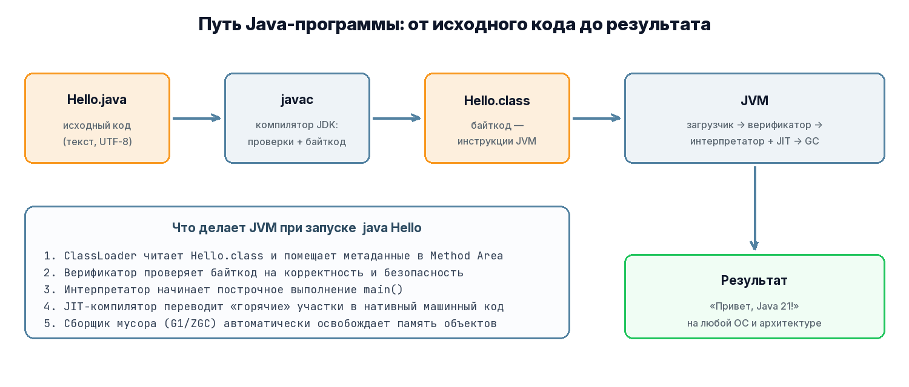
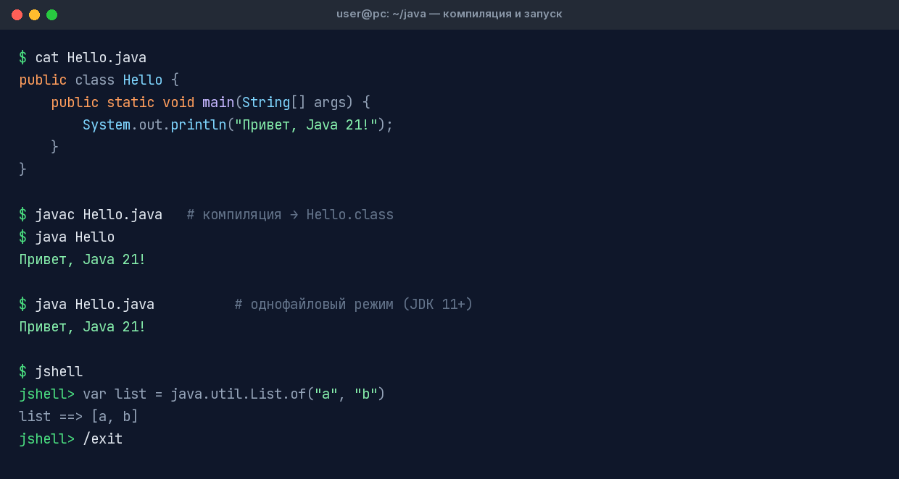

Первая программа
Hello World: от исходного кода до запуска
Пишем Hello World
Создайте файл Hello.java. Имя файла обязано совпадать с именем публичного класса:
java
public class Hello {
public static void main(String[] args) {
System.out.println("Привет, Java 21!");
}
}Компилируем и запускаем
bash
# 1. Компиляция: javac создаёт файл байткода Hello.class
$ javac Hello.java
# 2. Запуск: java исполняет байткод на JVM (без расширения .class!)
$ java Hello
Привет, Java 21!
javac → байткод → JVM (загрузчик, интерпретатор/JIT) → результатЧто происходит под капотом
javacпроверяет синтаксис и типы, генерирует байткод —Hello.class.javaзапускает JVM; загрузчик классов (ClassLoader) читает.classв память.- Верификатор проверяет байткод на безопасность.
- Интерпретатор начинает построчное исполнение; «горячие» участки кода JIT-компилятор (C2) переводит в машинный код на лету.
- Сборщик мусора (GC) автоматически освобождает память ненужных объектов.
Однофайловый режим (с JDK 11)
Для небольших скриптов компиляцию можно пропустить — java сам скомпилирует файл в памяти:
bash
$ java Hello.java
Привет, Java 21!REPL: jshell
jshell — интерактивная консоль Java (появилась в JDK 9). Идеальна, чтобы попробовать API без создания файлов:
console
$ jshell
jshell> var langs = java.util.List.of("Java", "Kotlin", "Scala")
langs ==> [Java, Kotlin, Scala]
jshell> langs.stream().map(String::toUpperCase).toList()
$2 ==> [JAVA, KOTLIN, SCALA]
jshell> /exit
javac, java, jshellРазбор метода main
| Элемент | Значение |
|---|---|
public | Метод доступен извне — JVM вызывает его как точку входа |
static | Метод принадлежит классу, а не объекту: экземпляр создавать не нужно |
void | Ничего не возвращает |
main | Зарезервированное имя точки входа (можно изменить при запуске: java -cp out MyMainClass) |
String[] args | Аргументы командной строки: java Hello раз два → args = ["раз", "два"] |
Preview в JDK 21: ещё короче
JEP 445 (preview) разрешает писать учебные программы вообще без объявления класса и static:
java
// Файл HelloPreview.java — preview-возможность JDK 21
void main() {
IO.println("Привет из будущего Java!");
}bash
$ javac --release 21 --enable-preview HelloPreview.java
$ java --enable-preview HelloPreview
Привет из будущего Java!⚠️ Внимание
Preview-возможности нельзя использовать в продакшене: их синтаксис может измениться. В финальном виде «compact source files» появились в JDK 25.💡 Совет
Следующий шаг: изучите основы синтаксиса — типы данных, переменные, условия и циклы.